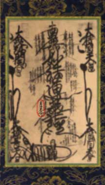
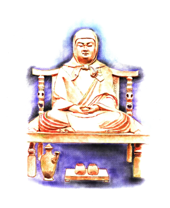

The great teacher Dengyo Daishi is located on the fourth row down, left hand side of Gohonzon. Dengyo would bring Tendai Buddhism to Japan and establish Mt. Hiei near Kyoto.Nichiren would consider Dengyo as one in the lineage of Nichrien Buddhism.
Dengyo Daishi; Saicho 767 - 822 CE